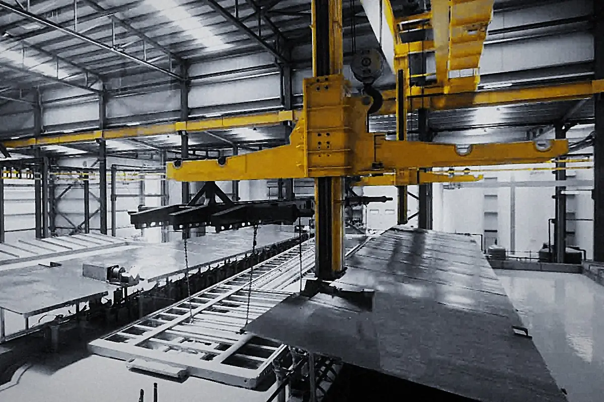

Cataphorèse à Legutio (Álava, Espagne), au Pays basque
Cataphorèse et système Marine C5-M
Un primaire par immersion qui va là où le pistolet ne va pas : intérieurs, corps creux, soudures et arêtes. Par-dessus, la couche de finition en peinture poudre. C’est la base du système Marine de Joma pour le littoral et les milieux agressifs.

- Brouillard salin
- 1 000 hUNE-EN ISO 9227 · [rapport à confirmer]
- Classement
- C5-MC5 · durabilité moyenne
- Système
- 3 couchesCataphorèse, primaire et poudre
Qu’est-ce que la cataphorèse
La cataphorèse, aussi appelée KTL ou e-coat, est une peinture par électrodéposition. La pièce, dégraissée et prétraitée, est plongée dans un bain de peinture hydrodiluable et branchée comme cathode. Sous l’effet du courant, la peinture se dépose sur toute la surface en contact avec le bain.
Comme elle va partout où va le liquide, elle couvre l’intérieur des tubes et des profilés fermés, les corps creux, les soudures et les arêtes avec une épaisseur très régulière, en général de 15 à 30 µm. C’est pourquoi c’est le primaire anticorrosion habituel des carrosseries automobiles et des machines.
La cataphorèse résiste mal aux UV. En extérieur, elle est recouverte d’une couche de finition en peinture poudre, qui apporte la couleur, l’aspect et la tenue aux intempéries.
Le système Marine, couche par couche
De l’extérieur vers l’acier, voici comment le système Marine protège une pièce :
- Peinture poudreCouche de finition, dans le RAL et l’aspect de votre choix.
- PrimaireCouche intermédiaire qui renforce la barrière anticorrosion.
- CataphorèsePrimaire par électrodéposition sur toute la surface, intérieurs compris.
- AcierDégraissé et prétraité par immersion avant peinture.
1 000 h de brouillard salin neutre (UNE-EN ISO 9227) [rapport à confirmer : laboratoire, date et n°]
C5-M et la norme ISO 12944
La norme ISO 12944-2 classe les environnements selon leur corrosivité, de C1 (intérieur sec) à CX (extrême). C5 correspond à une corrosivité très élevée : industrie humide et agressive, et littoral à forte salinité.
Depuis 2017, la catégorie s’écrit avec la durabilité prévue (ISO 12944-1) : L, jusqu’à 7 ans ; M, de 7 à 15 ; H, de 15 à 25, et VH, plus de 25. Le système Marine est C5-M : environnement C5, durabilité moyenne. La durabilité sert à planifier l’entretien ; ce n’est pas une garantie.
Pour C5-M, la partie 6 de la norme exige 720 h de brouillard salin neutre et 480 h de condensation. Le système Marine est testé à 1 000 h de brouillard salin [rapport et essai de condensation : à confirmer].
Attention aux anciens cahiers des charges : dans l’édition de 1998, C5-M était la classe marine et C5-I la classe industrielle ; en 2017, elles ont été regroupées en C5. Si votre CCTP cite C5-M, indiquez-nous son édition et nous vous confirmerons le système.
La série ISO 12944 a été écrite pour les peintures liquides ; pour les systèmes poudre, on utilise ses catégories et ses méthodes d’essai. Pour certifier un système poudre sur acier, le référentiel est QUALISTEELCOAT.
L’essai au brouillard salin neutre (UNE-EN ISO 9227) expose des éprouvettes rayées à un brouillard d’eau salée en enceinte et mesure la progression de la rouille depuis la rayure et l’apparition de cloques. Ses heures ne se convertissent pas en années d’exposition réelle.
Pour quelles pièces
- Mobilier urbain et équipements en front de mer.
- Charpente et chaudronnerie avec soudures, tubes ou profilés fermés.
- Châssis, supports et carters de machines en milieu industriel.
- Pièces en acier destinées à l’extérieur en atmosphère saline.
Données de la ligne
- Dimensions maximales
- [XX × XX × XX m]
- Poids maximal
- [XX] kg
- Épaisseur de cataphorèse
- [XX] µm
- Délai standard
- [XX] jours
Questions fréquentes
Quelle différence entre cataphorèse et peinture poudre ?
La cataphorèse est un primaire par immersion déposé par courant électrique, qui couvre toute la pièce, intérieurs compris. La peinture poudre est la couche de finition : elle apporte la couleur, l’aspect et la tenue aux intempéries. Dans le système Marine, les deux vont ensemble.
La cataphorèse peut-elle servir de finition ?
En intérieur ou sur des pièces non visibles, elle peut suffire. En extérieur, on la recouvre de peinture poudre, car elle résiste mal aux UV.
Que signifie C5-M ?
C5 est l’environnement : corrosivité très élevée, comme le front de mer ou l’industrie agressive. Le M est la durabilité prévue : moyenne, de 7 à 15 ans, selon l’ISO 12944. C’est le classement du système Marine. Dans l’édition de 1998, C5-M était la classe marine ; si votre cahier des charges est ancien, consultez-nous.
Combien d’heures de brouillard salin le système Marine tient-il ?
1 000 heures de brouillard salin neutre selon UNE-EN ISO 9227, au-delà des 720 h exigées pour C5-M [laboratoire, date et n° de rapport]. C’est un essai accéléré : ses heures ne se traduisent pas en années de service.
Que faut-il prévoir sur les tubes et profilés fermés ?
Des trous de vidange et d’évent, pour que le bain entre, couvre l’intérieur et s’égoutte. Envoyez-nous le plan et nous vous dirons où les percer.
Quelle taille de pièce passe sur la ligne ?
[Dimensions et poids maximaux de la cuve]